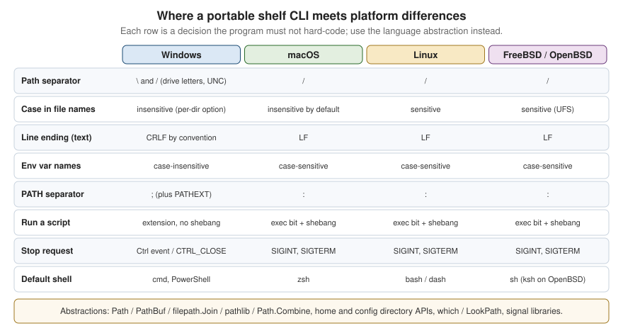

Cross-Platform Portability
|
This content was generated with the assistance of AI and should be verified against the official documentation before being relied on in production. |
A command-line tool that works on the author’s laptop is not yet a portable tool. The same shelf list command runs
under a different shell, finds its configuration in a different directory, receives a different kind of stop request,
writes a different line ending and may even be unable to create the file name it wants. This page collects those
differences in one place, shows the abstraction each language offers to hide them, explains how to translate the
program’s messages, and ends with a continuous-integration matrix that catches the differences before users do.
The page was written in October 2026 against these versions:
-
POSIX.1-2024 (IEEE Std 1003.1-2024, Open Group Base Specifications Issue 8) for the Unix-side behaviour, glibc 2.44 for Linux, and the Windows Console and Win32 documentation on Microsoft Learn for Windows. zsh is the default shell of macOS since macOS 10.15.
-
Rust with
stdand thedirectoriescrate, Go 1.27.3, Python 3.15.1 (the Python snippet was run on 3.9), .NET 10 LTS (10.0.13) with C# 14, Swift 6.4.1 and C with a C11 compiler. -
GitHub Actions hosted runners as listed in the
actions/runner-imagesrepository:ubuntu-latestis Ubuntu 24.04 (x64),macos-latestis macOS 26 (arm64) andwindows-latestis Windows Server 2025 (x64).
The running scenario is the shelf command-line tool of the Bookshelf domain (shelf list, shelf add,
shelf loan, shelf return) and its background companion shelfd. Every example in this page is a small piece of
the part of shelf that the platform makes hard: finding its configuration directory, locating an executable,
stopping cleanly and saying the same thing in several languages.
What the Official Documentation Provides, and What It Does Not
No single document covers portability. POSIX describes the Unix side and says explicitly which behaviours are implementation-defined, Microsoft documents Windows, Apple documents macOS, and each language documents its own standard library. Three consequences shape this page.
-
There is no official cross-platform table. The table below is assembled from the sources in the References section, and every row names the document it comes from or says that it is a convention.
-
The BSDs (FreeBSD, OpenBSD and NetBSD) are POSIX systems with their own userland. Their behaviour is documented in their own manual pages, which this page does not reproduce; the BSD column records only what differs in a way a CLI author meets, and says "as Linux" otherwise. macOS is a BSD-derived userland on the Darwin kernel, which is why many shell-script differences below apply to it too.
-
Terminal feature support (colour, hyperlinks, synchronized output) has no standard that guarantees detection. That topic is covered on Escape Sequences & Terminal Capabilities and is only summarised here.
The platform-specific mechanics are covered in depth on POSIX Processes, Signals & I/O and Windows Console & Processes. This page is the comparison that sits between them.
The Differences at a Glance

The figure shows the decisions that bite most often. The table below is the complete version.
| Topic | Windows | macOS | Linux | FreeBSD / OpenBSD |
|---|---|---|---|---|
Path separator and roots |
Both |
|
|
As Linux |
Reserved or forbidden names |
|
|
|
As Linux |
Case in file names |
Case-insensitive and case-preserving by default; NTFS can switch a directory to case-sensitive |
Case-insensitive and case-preserving on the default APFS volume; a case-sensitive APFS variant exists |
Case-sensitive on the common file systems |
Case-sensitive on UFS; ZFS decides per data set |
Line ending of text files |
CRLF by convention; many tools accept LF |
LF |
LF |
LF |
Text encoding |
UTF-16 in the Win32 wide API; the legacy ANSI and OEM code pages for |
UTF-8; file names are Unicode strings |
Bytes. The locale decides how they display; file names are arbitrary bytes |
Bytes, as Linux |
Environment variables |
Names are case-insensitive. |
Names are case-sensitive. |
Case-sensitive. |
As Linux |
User directories |
Known folders: |
|
XDG Base Directory: |
As Linux (XDG is followed by desktop software, not mandated by the base system) |
Finding an executable |
Searches the application directory, the current directory and the system directories before |
|
|
|
Running a script |
Chosen by file extension and association; shebang lines are not interpreted by the system |
Executable bit plus a |
Executable bit plus a |
Executable bit plus a |
File permissions |
Access control lists; the POSIX mode bits barely exist, the executable bit does not |
POSIX mode bits plus ACLs and flags |
POSIX mode bits, optional ACLs |
POSIX mode bits, optional ACLs |
Stop requests |
Console control events: |
Signals: |
Signals, plus the Linux-specific |
Signals, plus |
Process image path |
|
|
|
|
Terminal feature support |
Windows Terminal and the console host with virtual-terminal sequences enabled per handle |
Terminal.app, iTerm2, Ghostty and others; |
Wide variety; |
As Linux |
Default interactive shell |
|
|
Commonly |
|
Userland tools in scripts |
Not present unless installed (Git for Windows, MSYS2, WSL) |
BSD flavours: |
GNU flavours: |
BSD flavours, as macOS |
Sources for the rows: Windows file naming and path rules, the CreateProcess search order and console control events
are in the Microsoft Learn pages listed in the References; XDG directories in the
XDG Base Directory specification; environment-variable and locale behaviour in the POSIX Base Definitions chapters 7
and 8; the macOS default shell in Apple’s support article. The rows about case sensitivity on APFS, ZFS and UFS, the
BSD sed and date flavours and kqueue are widely known behaviours that this page does not source to a single
official document; test them on the target system before depending on them.
Paths, Files and Permissions
Separators, roots and length
A portable program never builds a path by concatenating strings with a separator. Windows accepts / in most
APIs, but it does not accept it in every command line tool, and a drive letter or a UNC prefix is part of the path’s
identity, not just text before the first separator. Every language below has a path type whose join method inserts
the right separator and whose parser understands the roots of the platform it runs on.
Two Windows limits matter to a tool that walks directories. A path is limited to 260 characters (MAX_PATH) unless the
process opts in to long paths, and a name that is a device name (NUL, CON, COM1) cannot be created however
it is spelled. The shelf tool names its data files from user input (a book title), so it must either restrict names
to a safe set or map them, because a book called Aux is a valid title and an invalid file name on Windows. The Windows
documentation lists the rules and the opt-in for long paths.
Case sensitivity and name collisions
On a case-sensitive file system Shelf.toml and shelf.toml are two files. Check out such a repository on
Windows or on a default macOS volume and one of them silently replaces the other. Two practical rules follow: never
distinguish files by case alone, and compare names with the platform’s rules when you must (Python’s
PureWindowsPath("C:/Shelf") == PureWindowsPath("c:/shelf") is true and PurePosixPath("/a") == PurePosixPath("/A")
is false; the snippet is in the Python example below). Windows 10 and later can mark a single directory
case-sensitive, a feature introduced for the Windows Subsystem for Linux, so a program that assumes the whole volume
is case-insensitive can also be wrong on Windows.
Line endings and encodings
Text-mode I/O on Windows in the C runtime translates \n to \r\n on output and the reverse on input; on POSIX
systems there is no translation. Python’s text mode does the same translation, controlled by its newline argument,
and .NET’s Environment.NewLine and Console.WriteLine follow the platform. Rust’s println! and Go’s fmt.Println
write a bare \n everywhere. A CLI that prints machine-readable output (JSON lines, TSV) should write \n explicitly
on every platform and say so, because a consumer on Windows that opens a pipe in text mode will translate it
anyway. A data file kept in Git should be pinned with a .gitattributes rule, for example * text=auto eol=lf,
so a checkout on Windows does not rewrite every line.
Encoding is the second half of the problem. Unix programs read and write bytes and let the locale decide how to show
them; Windows has a wide-character API and, for the narrow one, code pages. A Windows console program that prints UTF-8
must set the output code page or opt in through the application manifest, which
Windows Console & Processes explains. Python 3.15 enables its UTF-8
mode by default (PEP 686, listed in What’s New in Python 3.15), so the encoding of open() and the standard streams no
longer depends on the Windows ANSI code page; earlier versions need the encoding argument stated on every call.
Permissions and the executable bit
POSIX has nine mode bits and the executable bit decides whether a file can be run. Windows has access control lists,
and whether a file is executable depends on its extension. Library calls that set a mode therefore do very little on
Windows: Go’s os.Chmod documents that only the owner-write bit is used there, Python’s os.chmod supports only the
read-only flag, and .NET’s File.UnixFileMode throws PlatformNotSupportedException on Windows. A tool that writes a
secret (a token file for shelf) must create it with restrictive permissions on POSIX and rely on the user profile’s
default ACL on Windows; the configuration-and-auth page of the AI section discusses where tokens belong.
Executables, Environment and Shells
Executable lookup
Running shelfd means different things on each platform. On Unix the shell searches the entries of PATH in order and
runs the first file that has the executable bit. On Windows, a name without an extension is tried against each
extension in PATHEXT, and the search includes directories before PATH: the documentation of CreateProcess lists
the application directory, the current directory and the system directories. cmd.exe searches the current directory
first, which is why a malicious shelf.bat dropped into a working directory can run when the user types shelf.
PowerShell does not run from the current directory without an explicit .\ prefix.
Library helpers differ in how closely they follow the shell. Python’s shutil.which applies PATHEXT on Windows. Go’s
exec.LookPath also applies PATHEXT on Windows and, since Go 1.19, refuses a result found relative to the current
directory, returning an error that satisfies errors.Is(err, exec.ErrDot). When you spawn a child, pass the
program and its arguments as separate values and never build one shell string; the quoting rules of cmd.exe and
a POSIX shell are different, and Windows programs parse their own command line, as the Windows page explains.
Environment variables and home directories
Names of environment variables are case-insensitive on Windows and case-sensitive elsewhere, so a program that checks
for Shelf_Config can find it on one platform and miss it on another. Use the upper-case convention for variables you
define (SHELF_CONFIG_DIR, NO_COLOR). The home directory is HOME on Unix and the profile directory (USERPROFILE,
or the known-folder API) on Windows; do not read HOME directly when a library can answer, because services and
containers often run without it. The directories themselves (XDG on Linux, Library on macOS, AppData on Windows)
and the precedence of flags over environment over files are covered on
Configuration & Auth and are not repeated here.
Default shells and scripts
A tool that shells out, or ships an install script, meets whatever shell the user has. macOS has used zsh as the default
interactive shell since 10.15; most Linux distributions use bash for logins, but Debian and Ubuntu make /bin/sh the
smaller dash, which lacks bash extensions; OpenBSD uses ksh; Windows offers cmd.exe and two generations of
PowerShell. Scripts that must run everywhere either stay within POSIX sh, as defined in the Shell Command Language
chapter, or are replaced by a program in the same language as the tool. Userland differences count as much as shell
syntax: the GNU and BSD versions of sed, date, stat and xargs take different options. The Linux-only
sed -i form and the BSD sed -i '' form are the classic trap.
Signals Versus Console Control Events
On POSIX systems a program asks to be told about SIGINT (Ctrl+C), SIGTERM (the default of kill and of service
managers), SIGHUP (the terminal went away) and SIGPIPE (the reader of a pipe closed). On Windows, a console process
receives console control events through a handler registered with SetConsoleCtrlHandler: Ctrl+C, Ctrl+Break, the
close of the console window, logoff and shutdown. The handler runs on a separate thread, and for close, logoff and
shutdown the system terminates the process after a short time even if the handler is still running, so cleanup must
be quick. There is no SIGTERM that a console program receives from the system.
Each runtime builds a portable layer on top of these two models, with limits:
-
.NET’s
PosixSignalRegistration.Createregisters a handler for aPosixSignalvalue on every operating system and maps the Windows console events onto those values; read the mapping table in the API documentation before relying on a particular event. -
Go’s
os/signaldocuments how Ctrl+C, Ctrl+Break and the close events surface on Windows, andsignal.NotifyContextgives a context that ends onos.Interrupt; the Go page of this section builds on it. -
Rust has no signal support in
std; thectrlccrate andsignal-hookcover the common cases, as described on the Rust page of this section. -
Python’s
signalmodule definesSIGBREAKon Windows only, andsignal.SIGTERMcan be registered there but is never delivered by the system to a console process.
The portable design is to have a single cancellation object (a context, a token, an atomic flag) that every signal and event handler sets, and to do the cleanup on the main path after it is set. The exit status after a signal is a separate convention: shells report 128 plus the signal number, and the process page of the POSIX section explains it.
Terminal Feature Support
The differences that reach users are colour depth, hyperlinks, mouse support, Unicode width and the behaviour of the
alternate screen. On Unix, TERM and the terminfo database describe a terminal, COLORTERM=truecolor is a convention
for 24-bit colour, and NO_COLOR and FORCE_COLOR are community conventions rather than standards. On Windows, a
program has to turn virtual-terminal processing on for the output handle with SetConsoleMode before it can emit
colour sequences, and older hosts may not support them at all. Windows Terminal supports the sequences that the
tools in this section rely on, and Microsoft recommends virtual-terminal sequences over the classic console API for new
development.
Two portable rules cover most cases. First, ask the standard library whether a stream is a terminal (isatty,
IsTerminal, Console.IsOutputRedirected, term.IsTerminal) and print plain text when it is not. Second, let a library
translate: Rust’s crossterm and the Go and Python TUI libraries enable virtual-terminal mode on Windows for you. The
rules for colour and interactivity are on
TTY, Colour & Interactivity. One Windows difference leaks
through crossterm anyway: it reports a key press and a key release as two events on Windows, so event loops filter on
the press kind, which the Ratatui events page shows.
Portable Abstractions per Language
Each language gives you a path type, a way to locate per-user directories, an executable lookup, a terminal check and a
signal story. The table names the pieces; the examples after it use them in the shelf scenario.
| Language | Paths | Per-user directories | Executable lookup | Platform branching |
|---|---|---|---|---|
C |
POSIX functions and the Win32 equivalents behind your own wrapper; gnulib supplies GNU and POSIX functions on systems that lack them |
|
|
|
Swift |
|
|
|
|
Python |
|
|
|
|
Rust |
|
The |
|
|
Go |
|
|
|
|
.NET |
|
|
|
|
C: one #ifdef per platform, in one file
The portable pattern in C is to put every platform branch into a small module and keep the rest of the program free of
#ifdef. _WIN32 is defined by MSVC and MinGW compilers for both 32-bit and 64-bit Windows, __APPLE__ by Apple’s
compilers, and __linux__, __FreeBSD__, __OpenBSD__ and __NetBSD__ by the compilers of those systems. The program
below prints the platform, the separators and the per-user configuration directory of shelf.
#include <stdio.h>
#include <stdlib.h>
#ifdef _WIN32
#define PATH_SEP '\\'
#define LIST_SEP ';'
#else
#define PATH_SEP '/'
#define LIST_SEP ':'
#endif
static const char *platform(void) {
#if defined(_WIN32)
return "windows";
#elif defined(__APPLE__)
return "macos";
#elif defined(__linux__)
return "linux";
#elif defined(__FreeBSD__) || defined(__OpenBSD__) || defined(__NetBSD__)
return "bsd";
#else
return "unknown";
#endif
}
/* Writes the per-user config directory for shelf into buf. Returns 0 on success. */
static int config_dir(char *buf, size_t len) {
const char *base;
int n;
#ifdef _WIN32
base = getenv("APPDATA");
if (!base) return -1;
n = snprintf(buf, len, "%s%cshelf", base, PATH_SEP);
#elif defined(__APPLE__)
base = getenv("HOME");
if (!base) return -1;
n = snprintf(buf, len, "%s/Library/Application Support/shelf", base);
#else
base = getenv("XDG_CONFIG_HOME");
if (base && base[0] == '/') {
n = snprintf(buf, len, "%s/shelf", base);
} else {
base = getenv("HOME");
if (!base) return -1;
n = snprintf(buf, len, "%s/.config/shelf", base);
}
#endif
return (n > 0 && (size_t)n < len) ? 0 : -1;
}
int main(void) {
char dir[4096];
if (config_dir(dir, sizeof dir) != 0) {
fprintf(stderr, "shelf: cannot determine the config directory\n");
return 1;
}
printf("platform: %s\n", platform());
printf("path sep: %c, list sep: %c\n", PATH_SEP, LIST_SEP);
printf("config: %s\n", dir);
return 0;
}On macOS the program prints:
platform: macos
path sep: /, list sep: :
config: /Users/ana/Library/Application Support/shelfThe XDG rule in the code, that a relative XDG_CONFIG_HOME is ignored, comes from the XDG Base Directory
specification, which requires absolute paths. The getenv("APPDATA") branch on Windows returns the roaming profile
directory.
When a program needs more functions than this, gnulib is the GNU project’s portability library: it provides
replacements for POSIX and GNU functions on platforms that lack them, and it is meant to be copied into the project’s
source tree. For Windows, the alternative is to code against Win32 directly (GetEnvironmentVariableW,
SHGetKnownFolderPath) behind the same wrapper; on Windows the wide-character entry point wmain and the manifest
setting for UTF-8 are covered on the Windows page.
The C snippet was compiled with Apple clang (clang -Wall -Wextra) and run on macOS 26 with and without
XDG_CONFIG_HOME; the Windows and the Linux and BSD branches were not compiled while this page was written, because
the page was prepared on a macOS host.
Swift: Foundation and swift-system
Swift runs on macOS, Linux and Windows, and Foundation is available on all three. FileManager.default.urls(for:in:)
answers the per-user directory question with a platform-specific result, and #if os(...) branches at compile time.
The program below prints the home directory and the application-support directory in which shelf would keep its
configuration.
import Foundation
#if os(Windows)
let platform = "windows"
#elseif os(macOS)
let platform = "macos"
#elseif os(Linux)
let platform = "linux"
#else
let platform = "other"
#endif
let fm = FileManager.default
let home = fm.homeDirectoryForCurrentUser
let support = try fm.url(for: .applicationSupportDirectory, in: .userDomainMask,
appropriateFor: nil, create: false)
let config = support.appending(path: "shelf", directoryHint: .isDirectory)
print("platform:", platform)
print("home: ", home.path)
print("config: ", config.path)
print("exe: ", Bundle.main.executablePath ?? "unknown")
let path = ProcessInfo.processInfo.environment["PATH"] ?? ""
print("PATH entries:", path.split(separator: ":").count)The last two lines show the portable and the non-portable habit side by side: the executable path comes from the
runtime, but splitting PATH on a colon is wrong on Windows, where the separator is a semicolon. A real program uses a
library, or branches on the platform, for that.
Foundation’s path handling is based on URL and String; the swift-system package adds FilePath, a value type
for paths that is also available on every platform Swift supports. The low-level system calls differ in which C module
provides them, so Swift code that calls them imports Darwin on Apple platforms, Glibc or Musl on Linux, and WinSDK
on Windows, usually inside #if canImport(...).
Source: Apple — FileManager, swift-system
The Swift snippet was compiled and run with Swift 6.4 on macOS. The documentation of FileManager does not state which
directory the Linux and Windows implementations return for .applicationSupportDirectory, so the Linux and Windows
results are not shown here; check them on the target platforms.
Python: pathlib, os, shutil
pathlib is the portable layer of the standard library. Path is the concrete class for the running platform, while
PurePosixPath and PureWindowsPath apply one platform’s rules to strings on any machine, which is useful to test
Windows path handling on a Mac. shutil.which follows the shell’s lookup including PATHEXT, and
shutil.get_terminal_size reads the terminal size on every platform with a fallback.
import os, shutil, sys
from pathlib import Path, PurePosixPath, PureWindowsPath
print(sys.platform, os.name, repr(os.linesep), os.pathsep)
print(PureWindowsPath(r"C:\Users\ana\shelf\books.json").parts)
print(PurePosixPath("/home/ana/shelf/books.json").parts)
print(PureWindowsPath("C:/Shelf") == PureWindowsPath("c:/shelf"), PurePosixPath("/a") == PurePosixPath("/A"))
print(Path.home())
print(shutil.which("python3"))
print(shutil.get_terminal_size(fallback=(80, 24)))On macOS the output is:
darwin posix '\n' :
('C:\\', 'Users', 'ana', 'shelf', 'books.json')
('/', 'home', 'ana', 'shelf', 'books.json')
True False
/Users/ana
/usr/bin/python3
os.terminal_size(columns=80, lines=24)Python’s standard library has no function for the per-user configuration and cache directories; the third-party
platformdirs package is the usual answer and is not part of the language documentation. Open text files with an
explicit utf-8 value for the encoding argument and, for files that must keep their line endings, an empty
newline argument.
Source: Python — pathlib, Python — shutil
This snippet was run with the system Python 3.9 on macOS; it uses no feature newer than that.
Rust: std, directories and cfg
Rust’s Path and PathBuf hold an OsString, so a file name that is not valid Unicode is still representable. The
standard library has no per-user directory API for configuration; the directories crate returns the platform
convention (XDG on Linux, Library on macOS, known folders on Windows) from a ProjectDirs built from a qualifier,
an organisation and an application name. Platform-specific code goes behind #[cfg(unix)] and #[cfg(windows)]
attributes, and the extension traits under std::os::unix expose what only POSIX has.
use directories::ProjectDirs;
use std::{env, fs, path::{Path, PathBuf}};
fn config_dir() -> Result<PathBuf, Box<dyn std::error::Error>> {
// SHELF_CONFIG_DIR wins over the platform default.
if let Some(dir) = env::var_os("SHELF_CONFIG_DIR") {
return Ok(PathBuf::from(dir));
}
let dirs = ProjectDirs::from("org", "example", "shelf").ok_or("no home directory found")?;
Ok(dirs.config_dir().to_path_buf())
}
#[cfg(unix)]
fn make_executable(path: &Path) -> std::io::Result<()> {
use std::os::unix::fs::PermissionsExt;
let mut perms = fs::metadata(path)?.permissions();
perms.set_mode(perms.mode() | 0o111);
fs::set_permissions(path, perms)
}
#[cfg(not(unix))]
fn make_executable(_path: &Path) -> std::io::Result<()> {
Ok(()) // Windows decides by file extension
}
fn main() -> Result<(), Box<dyn std::error::Error>> {
let dir = config_dir()?;
fs::create_dir_all(&dir)?;
let file = dir.join("shelf.toml");
println!("{}", file.display());
make_executable(&file)?;
Ok(())
}The directories crate documents, per platform, the paths its functions return, including the qualified
application name it uses on macOS and the extra config component on Windows; read its table before you document
where shelf stores data. Terminal handling is also portable: std::io::IsTerminal answers whether a stream is a
terminal, and crossterm hides the Windows console API behind crossterm::terminal::size() and its event types.
The Rust page of this section covers the command-line parts in depth.
The Rust snippet was not compiled while this page was written, because no Rust toolchain was available on the host.
Go: os, path/filepath and x/term
Go’s standard library has per-user directories (os.UserConfigDir, os.UserCacheDir, os.UserHomeDir). The first
documents its answer per platform: $XDG_CONFIG_HOME or $HOME/.config on Unix, $HOME/Library/Application Support
on Darwin and %AppData% on Windows. path/filepath uses the platform separator; the sibling path package always
uses / and is for URLs and archive entries, a distinction that causes real bugs when a Windows build passes a
filepath result to a path function.
package main
import (
"fmt"
"os"
"os/exec"
"path/filepath"
"runtime"
"golang.org/x/term"
)
func main() {
cfg, err := os.UserConfigDir()
if err != nil {
fmt.Fprintln(os.Stderr, "shelf:", err)
os.Exit(1)
}
file := filepath.Join(cfg, "shelf", "shelf.toml")
fmt.Println("os/arch: ", runtime.GOOS+"/"+runtime.GOARCH)
fmt.Println("config: ", file)
if p, err := exec.LookPath("git"); err == nil {
fmt.Println("git: ", p)
}
fd := int(os.Stdout.Fd())
if term.IsTerminal(fd) {
w, h, _ := term.GetSize(fd)
fmt.Printf("terminal: %dx%d\n", w, h)
}
}Code that exists on one platform only goes in a file whose name ends in _windows.go, or behind a
//go:build windows line. Cross-compilation needs no extra toolchain for pure-Go code, so
GOOS=freebsd GOARCH=amd64 go build produces a FreeBSD binary from any host, which makes the BSDs cheap to cover.
The Go snippet was not compiled while this page was written, because no Go toolchain was available on the host.
.NET: Path, Environment and PosixSignalRegistration
Path, Environment and OperatingSystem. Environment.GetFolderPath takes aSpecialFolder and returns the location for the running operating system; the documentation lists the enum values but
does not tabulate the per-OS results, so print them on each target before documenting them. Environment.ProcessPath
returns the path of the running executable, and PosixSignalRegistration is the cross-platform way to see a stop
request, as the previous section described.
using System.Runtime.InteropServices;
string config = Path.Combine(
Environment.GetFolderPath(Environment.SpecialFolder.ApplicationData), "shelf");
Directory.CreateDirectory(config);
Console.WriteLine($"config: {config}");
Console.WriteLine($"exe: {Environment.ProcessPath}");
Console.WriteLine($"os: {RuntimeInformation.OSDescription}");
using var cts = new CancellationTokenSource();
using var term = PosixSignalRegistration.Create(PosixSignal.SIGTERM, ctx =>
{
ctx.Cancel = true; // keep the default termination from running; we shut down ourselves
cts.Cancel();
});
using var intr = PosixSignalRegistration.Create(PosixSignal.SIGINT, ctx =>
{
ctx.Cancel = true;
cts.Cancel();
});
try
{
await Task.Delay(Timeout.Infinite, cts.Token); // the real work would observe cts.Token
}
catch (OperationCanceledException)
{
Console.Error.WriteLine("shelf: stopping");
}For globalization, CultureInfo.CurrentCulture formats numbers and dates and CultureInfo.CurrentUICulture selects
resources; machine-readable output should use CultureInfo.InvariantCulture. Native AOT and trimmed apps can switch
off ICU with the invariant-globalization setting, at the cost of culture-aware behaviour.
Source: Microsoft — Environment.GetFolderPath, Microsoft — PosixSignalRegistration, Microsoft — Environment.ProcessPath
The C# snippet was not compiled or run while this page was written, because no .NET SDK was available on the host.
Internationalization
Internationalization has two halves: formatting values (numbers, dates, sorting) according to the user’s locale, and translating the messages the program prints. The command-line differences are in how each platform tells a program the user’s language.
Locales on POSIX
POSIX defines a locale as a set of categories (LC_CTYPE, LC_COLLATE, LC_MESSAGES, LC_NUMERIC, LC_TIME,
LC_MONETARY) selected through environment variables with a fixed precedence: LC_ALL overrides the individual
LC_* variables, which override LANG. A C program must call setlocale(LC_ALL, "") once at start-up, because the
default is the C (also called POSIX) locale, regardless of the environment. Two consequences affect a CLI:
-
Sorting and character classes follow the locale.
shelf list --sort titlecan order the same titles differently underen_US.UTF-8andC. Tests and machine-readable output setLC_ALL=C(or compare by code point) to be reproducible. -
Messages are translated only if the program asks. A locale variable by itself changes nothing in your own strings.
Windows does not use the POSIX variables. The user’s language and region come from the system: locale names are
BCP 47 tags, and a program asks for the user’s preferred UI languages through the Win32 national language support
functions. Ported Unix programs on Windows (under MSYS2 or Git Bash) may see LANG because the environment sets it,
but a native program should not depend on it.
GNU gettext
GNU gettext is the long-standing solution for C, C++ and the many languages with bindings to it. Source strings are
wrapped in a function (conventionally _("Loaned to %s")), xgettext extracts them into a template (.pot),
translators produce a .po file per language, and msgfmt compiles it into a binary .mo that is installed under
locale/<lang>/LC_MESSAGES/. At run time the program calls setlocale, then bindtextdomain and textdomain to select
the catalogue. Plural forms are part of the format (ngettext), and gettext’s LANGUAGE variable accepts a priority
list of languages on top of the locale.
#include <libintl.h>
#include <locale.h>
#include <stdio.h>
#define _(s) gettext(s)
int main(void) {
setlocale(LC_ALL, "");
bindtextdomain("shelf", "/usr/share/locale");
textdomain("shelf");
int n = 3;
printf(ngettext("%d book is on loan\n", "%d books are on loan\n", n), n);
return 0;
}Positional arguments (%1$s) matter in translations because word order differs between languages. POSIX printf
supports them; Microsoft’s C runtime provides separate positional-parameter variants (_printf_p and friends), so a
portable program wraps its formatting. Availability also differs: glibc includes gettext, but Apple’s C library does not
provide GNU gettext’s libintl, so on macOS and Windows a project links GNU gettext’s library from a package manager
or vendors it.
This snippet was not compiled while this page was written, because the host has no GNU gettext library installed.
Project Fluent
Project Fluent (Mozilla) is a localization system whose message files, .ftl, put the grammar in the translation
instead of the code: a message can select a plural form, a gender or a case with selectors, so the translator, not
the programmer, decides how a sentence changes with a count. Implementations exist for several languages; the project
site lists them and defines the syntax, and a program picks the best available file with language negotiation.
shelf-loan-count =
{ $count ->
[one] { $title } is on loan to one reader.
*[other] { $title } is on loan to { $count } readers.
}The same message in a Spanish file would carry its own selector branches. The syntax shown is from the project’s syntax guide; the page does not show an application programming interface because the interface differs per implementation.
Source: Project Fluent, Fluent Syntax Guide
.NET resources and Python locale
.resx resource files compiled into satellite assemblies, one per culture, andResourceManager picks the one that matches CultureInfo.CurrentUICulture with a fallback to the neutral language.
Python’s standard library offers gettext (the GNU catalogue format) and locale; Python 3.15 and earlier read
the POSIX variables through locale on every platform, and on Windows the user’s locale comes from the system.
The deeper treatment of screen readers, plain output and the translation workflow is on Accessibility & Internationalization. Two rules apply to the portability question: never translate machine-readable output or its field names, and keep the exit codes and log keys in English so scripts written on one platform work on another.
A CI Matrix on GitHub Actions
Portability that is not tested is only a hope. A matrix job runs the same steps on ubuntu-latest, macos-latest and
windows-latest, and each runner has its own file system, shell and terminal behaviour, which is the point. The
workflow below builds and tests the Rust version of shelf on the three runners and runs a smoke test of the produced
binary.
name: shelf-ci
on:
push:
branches: [main]
pull_request:
jobs:
test:
name: test (${{ matrix.os }})
runs-on: ${{ matrix.os }}
strategy:
fail-fast: false # let every platform report, even when one fails
matrix:
os: [ubuntu-latest, macos-latest, windows-latest]
include:
- os: ubuntu-24.04-arm # a second CPU architecture on Linux
- os: windows-11-arm
defaults:
run:
shell: bash # on Windows this is Git Bash, not PowerShell
env:
NO_COLOR: "1" # keep logs free of escape sequences
steps:
- uses: actions/checkout@v7
- name: Show toolchain
run: |
rustc --version
cargo --version
- name: Test
run: cargo test --locked
- name: Smoke test
run: |
cargo build --locked
./target/debug/shelf --version
./target/debug/shelf list --format json | head -c 200A few details that the three runners make visible:
-
ubuntu-latest,macos-latestandwindows-latestare labels, and the operating-system version behind a label moves over time; theactions/runner-imagesrepository lists what each label means today. Pin a version (for exampleubuntu-24.04) when a reproducible environment matters more than staying current. -
macos-latestis an Apple silicon (arm64) runner, so an Intel-only dependency fails there. Intel macOS runners have separate labels such asmacos-15-intel. -
The default shell on Windows runners is PowerShell, which is why the example sets
shell: bash. Running./target/debug/shelfin Git Bash findsshelf.exewithout the extension. -
fail-fast: falsekeeps the other jobs running when one platform fails; the default cancels them, hiding the second failure. -
The
includeentries that name only anosadd jobs for the Arm runners without a new matrix axis. -
The Rust toolchain is preinstalled on GitHub-hosted runners; the other languages use their
setup-*actions.
* text=auto eol=lf
*.bat text eol=crlf
*.cmd text eol=crlfThe .gitattributes file above, kept next to the workflow, keeps the source files LF on every runner and the Windows
batch files CRLF. Without it, the Windows job checks out CRLF files and a golden-output test that compares bytes fails
there alone.
Source: GitHub — Running variations of jobs in a workflow, actions/runner-images, Git — gitattributes
The workflow was not run while this page was written. The Windows-specific build and packaging steps of a CI pipeline are described on CI/CD with GitHub Actions in the Windows Apps section; the packaging of native binaries is on Native Packages & Installers.
Pitfalls
The differences above turn into the same handful of bugs; all are cheap to prevent with the matrix.
-
Hard-coded separators. A string such as
config/shelf.tomlwritten by hand works until the program prints it for a Windows user or compares it with a path that came from the operating system. Use the path type, and convert explicitly when a format needs/(URLs, archive entries, JSON that is meant to be portable). -
Case-only collisions and names that are valid on one platform only. Two files that differ by case, a name ending in a dot, or a book titled
Conbreak a Windows or macOS checkout while passing on Linux. -
Assuming
HOMEand a writable home. Services, containers and CI jobs may run without it; fall back to a documented environment override and fail with a message that names it. -
Assuming
SIGTERM. A clean-shutdown test that sendsSIGTERMproves nothing for the Windows build; test the console event too, or put the cleanup behind the cancellation object that both feed. -
Locale-dependent output in tests. Set
LC_ALL=Cor the invariant culture in tests that compare output, and use a separate test for each translation. -
Running a program found in the current directory. On Windows the current directory is part of the lookup in several APIs; resolve the executable explicitly and prefer an absolute path for helpers that ship with
shelf. -
Trusting terminal features. Detect and degrade; never print escape sequences into a pipe or a log.
-
Text-mode surprises. A file written in text mode on Windows gains carriage returns; open data files in binary mode or state the newline convention.
References
-
POSIX.1-2024 (IEEE Std 1003.1-2024): https://pubs.opengroup.org/onlinepubs/9799919799/ — Locale https://pubs.opengroup.org/onlinepubs/9799919799/basedefs/V1_chap07.html and Environment Variables https://pubs.opengroup.org/onlinepubs/9799919799/basedefs/V1_chap08.html
-
XDG Base Directory Specification: https://specifications.freedesktop.org/basedir/latest/
-
GNU gettext manual: https://www.gnu.org/software/gettext/manual/ and gnulib: https://www.gnu.org/software/gnulib/
-
Project Fluent: https://projectfluent.org/ and the syntax guide https://projectfluent.org/fluent/guide/
-
Windows: naming files and paths https://learn.microsoft.com/en-us/windows/win32/fileio/naming-a-file, maximum path length https://learn.microsoft.com/en-us/windows/win32/fileio/maximum-file-path-limitation,
CreateProcesshttps://learn.microsoft.com/en-us/windows/win32/api/processthreadsapi/nf-processthreadsapi-createprocessw,HandlerRoutineconsole control events https://learn.microsoft.com/en-us/windows/console/handlerroutine, locale names https://learn.microsoft.com/en-us/windows/win32/intl/locale-names, case sensitivity per directory https://learn.microsoft.com/en-us/windows/wsl/case-sensitivity -
Microsoft C/C++ predefined macros: https://learn.microsoft.com/en-us/cpp/preprocessor/predefined-macros
-
Apple: zsh as the default shell https://support.apple.com/en-us/102360,
FileManagerhttps://developer.apple.com/documentation/foundation/filemanager, swift-system https://github.com/apple/swift-system -
Python: pathlib https://docs.python.org/3/library/pathlib.html, shutil https://docs.python.org/3/library/shutil.html, os https://docs.python.org/3/library/os.html, locale https://docs.python.org/3/library/locale.html, What’s New in Python 3.15 https://docs.python.org/3/whatsnew/3.15.html
-
Rust:
std::pathhttps://doc.rust-lang.org/std/path/index.html,std::env::current_exehttps://doc.rust-lang.org/std/env/fn.current_exe.html,PermissionsExthttps://doc.rust-lang.org/std/os/unix/fs/trait.PermissionsExt.html, conditional compilation https://doc.rust-lang.org/reference/conditional-compilation.html,directorieshttps://docs.rs/directories/latest/directories/ -
Go:
oshttps://pkg.go.dev/os,os/exechttps://pkg.go.dev/os/exec,os/signalhttps://pkg.go.dev/os/signal,golang.org/x/termhttps://pkg.go.dev/golang.org/x/term,cmd/gohttps://pkg.go.dev/cmd/go -
.NET:
Environment.GetFolderPathhttps://learn.microsoft.com/en-us/dotnet/api/system.environment.getfolderpath,Environment.ProcessPathhttps://learn.microsoft.com/en-us/dotnet/api/system.environment.processpath,PosixSignalRegistrationhttps://learn.microsoft.com/en-us/dotnet/api/system.runtime.interopservices.posixsignalregistration,File.SetUnixFileModehttps://learn.microsoft.com/en-us/dotnet/api/system.io.file.setunixfilemode,OperatingSystemhttps://learn.microsoft.com/en-us/dotnet/api/system.operatingsystem, resources https://learn.microsoft.com/en-us/dotnet/core/extensions/resources, globalization and ICU https://learn.microsoft.com/en-us/dotnet/core/extensions/globalization-icu -
GitHub Actions: matrix jobs https://docs.github.com/en/actions/writing-workflows/choosing-what-your-workflow-does/running-variations-of-jobs-in-a-workflow, hosted runner images https://github.com/actions/runner-images
-
Git: gitattributes https://git-scm.com/docs/gitattributes